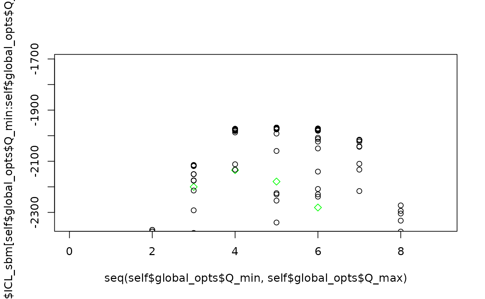
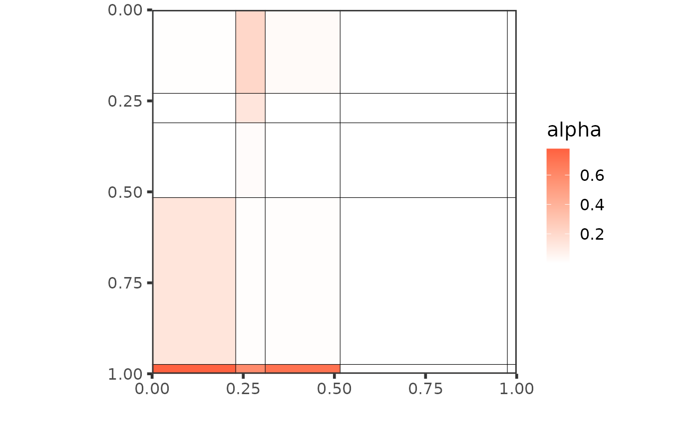
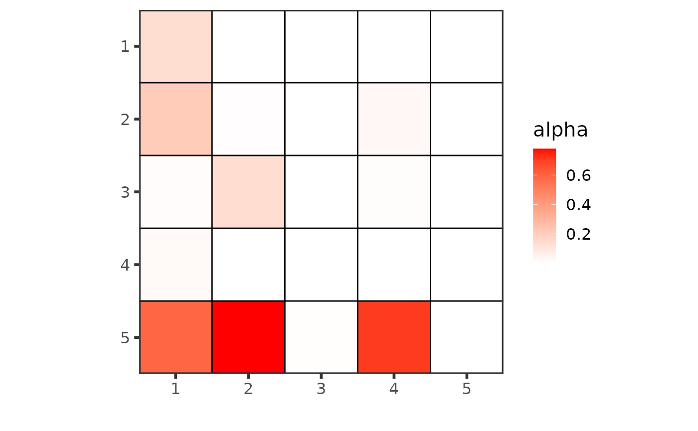
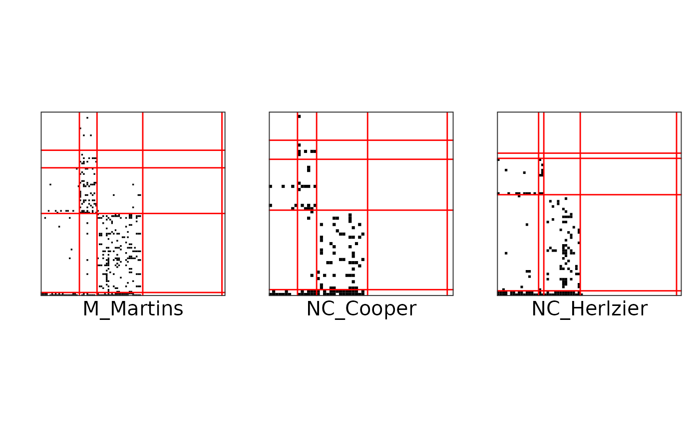

Tutorial on food webs
tutorial.Rmd
global_opts = list(nb_cores = 1L,
nb_models = 5L,
nb_init = 10L,
depth = 2L,
verbosity = 1,
spectral_init = FALSE,
Q_max = 8L,
plot_details = 1)
set.seed(1234)
res_fw_iid <- estimate_colSBM(netlist = foodwebs[1:3],
colsbm_model = "iid",
directed = TRUE,
net_id = names(foodwebs)[1:3],
nb_run = 1L,
global_opts = global_opts)
#> 0/1:
#> 0/1:
#> 0/2:
#> 0/2:
#> 0/3:
#> 0/3:
#> Please install the progress-package in order to get a progress bar.
#> ==== Optimization finished for networks M_Martins NC_Cooper NC_Herlzier ====
#> vbound : -2728 -2346 -2065 -1886 -1834 -1781 -1758 -1938
#> ICL : -2733 -2379 -2116 -1984 -1988 -2000 -2064 -2306
#> BICL : -2733 -2368 -2115 -1973 -1968 -1972 -2016 -2273
#> Best model for Q = 5
#> Joint modelisation preferred over separated one. BICL: -1968.35 vs -2120.216
res_fw_iid$BICL
#> [1] -2732.899 -2368.365 -2114.924 -1973.238 -1968.350 -1971.822 -2016.042
#> [8] -2272.628
plot(res_fw_iid$best_fit, type = "graphon")
plot(res_fw_iid$best_fit, type = "meso", mixture = FALSE)
#> New names:
#> • `` -> `...1`
#> • `` -> `...2`
#> • `` -> `...3`
plot(res_fw_iid$best_fit, type = "block", net_id = 1) +
plot(res_fw_iid$best_fit, type = "block", net_id = 2) +
plot(res_fw_iid$best_fit, type = "block", net_id = 3) 